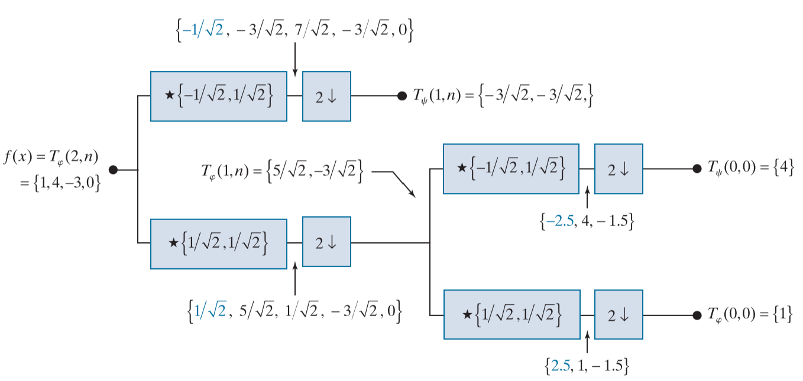
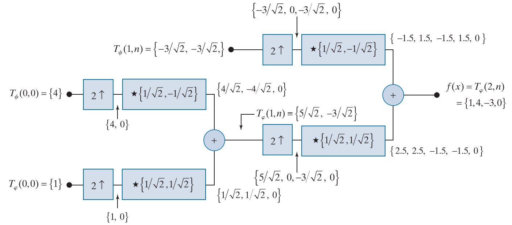

2023-12-06 10:40:00-0400
尺度 (scale) 是图像金字塔的一个重要概念。尺度是指图像的尺寸和分辨率，对图像进行缩放就是改变图像的尺度。图像金字塔是一种多尺度的图像表示，可以用来检测图像中的不同尺度的特征。图像金字塔一般从最底层的开始，每向上移动一层，尺寸和分辨率就会降低。图像金字塔第\(n\)级1的图像大小为\(2^{n}\times 2^{n}\)，顶点一般为第0级，大小为\(1\times 1\)，依次向下为\(2\times 2\text{，}\dots\text{，}2^{n}\times 2^{n}\)。一般我们记初始/最底层图像的大小为\(2^J\times 2^J\)，其中\(J\)为最大级数，一个图像金字塔有\(J+1\)级。令\(N=2^J\)，最底层图像的元素个数为\(N^2\)，图像金字塔的最大总元素个数为
\[N^2(1+\frac{1}{4^1}+\frac{1}{4^2}+\dots+\frac{1}{4^J})=N^2\frac{1-\frac{1}{4^{J+1}}}{1-\frac{1}{4}}\leq \frac{N^2}{1-\frac{1}{4}}=\frac{4}{3}N^2\]
采样 (sampling) 是图像金字塔的另一个重要概念。采样分为上采样 (upsampling) 和下采样2 (downsampling)。上采样是指将图像的尺度变大，比如插入零值像素并使用插值算法对其重构，上采样可以得到图像金字塔中尺度更大的图像；下采样是指将图像的尺度变小，比如将图像的每个像素替换为其邻域像素的平均值，下采样可以得到图像金字塔中尺度更小的图像。
Z变换用于分析离散信号，以复数平面的单位圆为基础，将离散信号的时域/空域转换为复数平面的频域\(x(n)\Leftrightarrow X(z)\)。Z变换的定义如下：
\[ X(z)=\sum_{n=-\infty}^{\infty}x(n)z^{-n}\quad z\in\mathbb{C} \]
Z变换的性质如下：
\[ \begin{aligned} X(z^{-1}) &= \sum_{n=-\infty}^{\infty}x(n)z^{n}\\ &= \sum_{m=\infty}^{-\infty}x(-m)z^{-m}\\ &= \sum_{m=-\infty}^{\infty}x(-m)z^{-m}\\ &\Leftrightarrow x(-n) \\ \end{aligned} \]
\[ \begin{aligned} z^{-k}X(z) &= \sum_{n=-\infty}^{\infty}x(n)z^{-(n+k)}\\ &= \sum_{m=-\infty}^{\infty}x(m-k)z^{-m}\\ &\Leftrightarrow x(n-k)\\ \end{aligned} \]
\[ \begin{aligned} X(-z)&= \sum_{n=-\infty}^{\infty}x(n)(-z)^{-n}\\ &= \sum_{n=-\infty}^{\infty}(-1)^nx(n)z^{-n}\\ &\Leftrightarrow (-1)^nx(n)\\ a^nx(n) &\Leftrightarrow X(\frac{z}{a})\\ \end{aligned} \]
\[ x_1(n)\star x_2(n) \Leftrightarrow X_1(z)X_2(z) \]
\[ \begin{aligned} X(z)+X(-z)&= \sum_{n=-\infty}^{\infty}x(n)z^{-n}+\sum_{n=-\infty}^{\infty}x(n)(-z)^{-n}\\ &= \sum_{n=-\infty}^{\infty}x(n)(z^{-n}+(-z)^{-n})\\ &= \sum_{n=-\infty}^{\infty}(1+(-1)^n)x(n)z^{-n}\\ &= 2\sum_{n=-\infty}^{\infty}x(2n)z^{-2n}\\ &\Leftrightarrow x(2n)\\ \end{aligned} \]
对于下采样:
\[ \begin{aligned} x_{down}(n) &= x(2n)\\ &\Leftrightarrow \frac{1}{2}[X(z^{\frac{1}{2}})+X(-z^{\frac{1}{2}})]\\ \end{aligned} \]
对于上采样:
\[ x_{up}(n) = \left\{ \begin{aligned} &x(\frac{n}{2})&n\text{为偶数}\\ &0&n\text{为奇数}\\ \end{aligned}\right. \]
\[ \begin{aligned} X(z^2)&= \sum_{n=-\infty}^{\infty}x(n)z^{-2n}\\ &= \sum_{m=-\infty}^{\infty}x(\frac{m}{2})z^{-m}\quad m\text{为偶数}\\ &\Leftrightarrow x_{up}(n)\\ \end{aligned} \]
一个信号经过上采样和下采样后，其对应的Z变换为：
\[ \hat{X}(z) = \frac{1}{2}[X(z)+X(-z)] \]
\[ \begin{aligned} \hat{x}(n) &= Z^{-1}[\hat{X}(z)]\\ Z^{-1}[\hat{X}(-z)] &= (-1)^n\hat{x}(n)\\ \end{aligned} \]
输入\(x(n)\)输出\(\hat{x}(n)\)；\(x(n)\)经过分析滤波器\(h_0\)和\(h_1\)后，分别得到低频信号\(y_0(n)\)和高频信号\(y_1(n)\)；下采样后再经过综合滤波器\(g_0\)和\(g_1\)，得到\(\hat{x}(n)\)。分析滤波器是半波滤波器，即对应频率域的低通滤波器和高通滤波器；综合滤波器是全波滤波器，即对应频率域的带通滤波器。
\[ \begin{aligned} \hat{X}(z)&= \frac{1}{2}G_0(z)[H_0(z)X(z)+H_0(-z)X(-z)]+\frac{1}{2}G_1(z)[H_1(z)X(z)+H_1(-z)X(-z)]\\ &=\frac{1}{2}[G_0(z)H_0(z)+G_1(z)H_1(z)]X(z)+\frac{1}{2}[G_0(z)H_0(-z)+G_1(z)H_1(-z)]X(-z)\\ \end{aligned} \]
\[ \begin{aligned} G_0(z)H_0(z)+G_1(z)H_1(z) &= 2\\ G_0(z)H_0(-z)+G_1(z)H_1(-z) &= 0\\ \end{aligned} \]
\[ \begin{aligned} \begin{bmatrix} G_0(z) & G_1(z)\\ \end{bmatrix} H_m &= \begin{bmatrix} 2 & 0\\ \end{bmatrix}\\ H_m&=\begin{bmatrix} H_0(z) & H_0(-z)\\ H_1(z) & H_1(-z)\\ \end{bmatrix} \end{aligned} \]
\[ |H_m(z)|=H_0(z)H_1(-z)-H_1(z)H_0(-z)=-|H_m(-z)| \]
如果\(H_m\)是可逆的，那么存在
\[ H_m^* = \begin{bmatrix} H_1(-z) & -H_0(-z)\\ -H_1(z) & H_0(z)\\ \end{bmatrix}=|H_m|H_m^{-1} \]
\[ \begin{aligned} \begin{bmatrix} G_0(z) & G_1(z)\\ \end{bmatrix} H_mH_m^*&= \begin{bmatrix} 2 & 0\\ \end{bmatrix}H_m^*\\ \begin{bmatrix} G_0(z) & G_1(z)\\ \end{bmatrix} &= \begin{bmatrix} 2 & 0\\ \end{bmatrix}H_m^*|H_m|^{-1}\\ &=\frac{2}{|H_m|}\begin{bmatrix} H_1(-z) & -H_0(-z)\\ \end{bmatrix}\\ \end{aligned} \]
伴随矩阵是代数余子式矩阵的转置，是逆矩阵\(A^{-1}\)的\(|A|\)倍，
因此，\(G_0(z)\)和\(G_1(z)\)是\(H_1(-z)\)和\(-H_0(-z)\)的线性变换，倍数为\(\frac{2}{|H_m|}=\frac{2}{|H_0(z)H_1(-z)-H_1(z)H_0(-z)|}\)。
\[ |H_m(z)|=\alpha z^{-(2k+1)} \]
那么有
\[ \begin{aligned} G_0(z)&=\frac{2}{\alpha}z^{(2k+1)}H_1(-z)\\ G_1(z)&=-\frac{2}{\alpha}z^{(2k+1)}H_0(-z)\\ \end{aligned} \]
\(z^{(2k+1)}\)是一个群时延，忽略\(z^{(2k+1)}\)，根据Z变换的性质有
\[ \begin{aligned} g_0(n)&=(-1)^n h_1(n)\\ g_1(n)&=(-1)^{n+1} h_0(n)\\ \end{aligned} \]
\[ \begin{aligned} g_0(n)&=(-1)^{n+1} h_1(n)\\ g_1(n)&=(-1)^n h_0(n)\\ \end{aligned} \]
对于完美重构的情况，\(G_0(z)=\frac{2}{|H_m(z)|}H_1(-z)\)，\(G_1(z)=-\frac{2}{|H_m(z)|}H_0(-z)\)，那么有
\[ \begin{aligned} \text{令 }P(z)&=G_0(z)H_0(z)\\&=\frac{2}{|H_m(z)|}H_1(-z)H_0(z)\\ G_1(z)H_1(z)&=\frac{-2}{|H_m(z)|}H_0(-z)H_1(z)\\ &=\frac{2}{|H_m(-z)|}H_1(z)H_0(-z)\\ &=P(-z)\\ &=G_0(-z)H_0(-z)\\ \end{aligned} \]
符号反转可得\(G_0(z)H_0(z)=G_1(-z)H_1(-z)\)
代入无误差重构的条件：
\[ G_0(z)H_0(z)+G_0(-z)H_0(-z)=2 \]
频域的相乘等价于空域/时域的卷积，因此有
\[ \sum_k g_0(k)h_0(n-k)+(-1)^n\sum_k g_0(k)h_0(n-k)=2\delta(n) \]
当\(n\)为奇数时由冲激函数性质可知等式恒成立；当\(n\)为偶数时，有
\[ \sum_k g_0(k)h_0(2n-k)=\delta(n)=\left \{ \begin{aligned} 1&\quad n=0\\ 0&\quad n\neq 0\\ \end{aligned}\right. \]
即
\[ \left \langle g_0(k),h_0(2n-k) \right \rangle = \delta(n) \]
类似的结论有
\[ \begin{aligned} \left \langle g_1(k),h_1(2n-k) \right \rangle &= \delta(n)\\ \left \langle g_0(k),h_1(2n-k) \right \rangle &= 0\\ \left \langle g_1(k),h_0(2n-k) \right \rangle &= 0\\ \end{aligned} \]
此处给出\(\left \langle g_0(k),h_1(2n-k) \right \rangle = 0\)的证明：
\[ \text{已知 }\left\{ \begin{aligned} G_0(z)H_0(z)+G_1(z)H_1(z) &= 2\\ G_0(z)H_0(-z)+G_1(z)H_1(-z) &= 0\\ G_1(z)H_1(z) &=G_0(-z)H_0(-z)\\ G_0(z)H_0(z) &=G_1(-z)H_1(-z)\\ \end{aligned}\right.\\ \]
\[ \begin{aligned} &\text{根据已知得 }&H_0(-z)=-\frac{G_1(z)H_1(-z)}{G_0(z)}=\frac{G_1(z)H_1(z)}{G_0(-z)}\\ &\text{交叉变换得 }&G_0(z)H_1(z)+G_0(-z)H_1(-z)=0\\ &\text{Z反变换得 }&\sum_k g_0(k)h_1(n-k)+(-1)^n\sum_k g_0(k)h_1(n-k)=0\\ &\text{奇次项抵消得 }& \sum_k g_0(k)h_1(2n-k)=0\\ \end{aligned} \]
可以看出证明的关键在于消去\(H_0(-z)\)或\(H_1(-z)\)。
给定大小为\(N=2^n\)，\(k=0,1,\dots,N-1\)，可分解为\(k=2^p+q-1\)，其中\(p\in [0,n-1]\)，\(q\in [1,2^p]\)，\(p\in \mathbb{Z}\)，\(q\in \mathbb{Z}\)。当\(k=0\)时，直接令\(p=q=0\)。
\[ h_k(z)=h_{pq}(z) = \frac{1}{\sqrt{N}}\left\{ \begin{aligned} 1&\quad k=0\\ 2^{p/2}&\quad (q-1)/2^p\leq z<(q-0.5)/2^p\\ -2^{p/2}&\quad (q-0.5)/2^p\leq z<q/2^p\\ 0&\quad otherwise\\ \end{aligned}\right. \]
对于\(i\in [0,N-1]\)，\(j\in [0,N-1]\)，\(h_{i,j}=h_i(\frac{j}{N})\)
\[ H_N=\begin{bmatrix} h_0(\frac{0}{N}) & h_0(\frac{1}{N}) & \dots & h_0(\frac{N-1}{N})\\ h_1(\frac{0}{N}) & h_1(\frac{1}{N}) & \dots & h_1(\frac{N-1}{N})\\ \vdots & \vdots & \ddots & \vdots\\ h_{N-1}(\frac{0}{N}) & h_{N-1}(\frac{1}{N}) & \dots & h_{N-1}(\frac{N-1}{N})\\ \end{bmatrix} \]
哈尔变换矩阵任取不相同两行的内积都为0，即每个向量都是正交的，因此哈尔变换矩阵是正交矩阵，即\(H_N^TH_N=I\)，其中\(I\)是单位矩阵。一般我们默认行向量代表基向量，也可以叫做尺度函数或小波函数，即
\[ H_N=\begin{bmatrix} \varphi_{0,0}\\ \psi_{0,0}\\ \psi_{1,0}\\ \psi_{1,1}\\ \vdots \\ \psi_{J-1, 0}\\ \vdots \\ \psi_{J-1, 2^{J-1}-1}\\ \end{bmatrix} \]
这里\(N\)是矩阵的行数，\(N=2^J\)，\(J\)是尺度的上限，尺度\(j=0, 1, 2, \dots, J-1\)，平移\(k=0, 1, 2, \dots, 2^j-1\)。对尺度和平移求和恰好可得到\(N\)，即
\[ \begin{aligned} &1 + 1 + 2 + \cdots + 2^{J-1}\\ =& 1 + \frac{1-2^J}{1-2}\\ =& 2^J\\ \end{aligned} \]
一个函数可以看成是一组正交函数的线性组合，即
\[ f(x)=\sum_{k=-\infty}^{\infty}\alpha_k\phi_k(x) \]
\(\{\phi_k(x)\}\)是正交函数集，\(\alpha_k\)是系数。
考虑一个简单的单位函数 (哈尔框函数) \(\varphi(x)\)，它定义为\([0,1)\)上的单位函数，即
\[ \varphi(x)=\left\{ \begin{aligned} 1&\quad 0\leq x<1 \\ 0&\quad otherwise\\ \end{aligned}\right. \]
通过平移和缩放，我们可以定义一组函数\(\{\varphi_{j,k}(x)\}\)，其中\(j\in \mathbb{Z}\)，\(k\in \mathbb{Z}\)，\(j\)表示尺度，\(k\)表示平移，\(\varphi_{j,k}(x)=2^{j/2}\varphi(2^jx-k)\)；\(k\)为正数时，单位函数向正方向平移，\(k\)为负数时，单位函数向负方向平移；\(j\)越大，单位函数越窄且越高，\(j\)越小，单位函数越宽且越矮。给定\(j_0\)，\(\{\varphi_{j_0,k}(x)\}\)构成了一组正交函数集，张成了一个子空间\(V_{j_0}\)，\(V_{j_0}\)中的函数可以看成是\(\{\varphi_{j_0,k}(x)\}\)的线性组合，即
\[ V_{j_0}=\left\{f(x)=\sum_{k=-\infty}^{\infty}\alpha_k\varphi_{j_0,k}(x)\right\} \]
令\(0\leq 2^{j_0}x - k < 1\)，则有
\[ \varphi_{j_0,k}(x)=\left\{ \begin{aligned} 1&\quad \frac{k}{2^{j_0}}\leq x< \frac{k+1}{2^{j_0}}\\ 0&\quad otherwise\\ \end{aligned}\right. \]
尺度\(j_0\)的单位函数\(\varphi_{j_0,k}(x)\)的支撑集 (support) 是\([\frac{k}{2^{j_0}},\frac{k+1}{2^{j_0}})\)，支撑集的长度为\(\frac{1}{2^{j_0}}\)。
重写低尺度函数的线性表达式，将系数看成关于平移\(n\)的函数，即
\[ \varphi_{j,k} = \sum_{n=-\infty}^{\infty}h_{\varphi}(n)\varphi_{j+1,n}=\sum_{n=-\infty}^{\infty}h_{\varphi}(n)2^{(j+1)/2}\varphi(2^{j+1}x-n) \]
当\(j=k=0\)时，有
\[ \begin{aligned} \varphi(x) &= \sum_{n=-\infty}^{\infty}h_{\varphi}(n)\sqrt{2}\varphi(2x-n)\\ h_{\varphi}(k) &= \left \langle \varphi(x),\sqrt{2}\varphi(2x-k) \right \rangle\\ \end{aligned} \]
\(h_{\varphi}(n)\)称为尺度函数系数，\(h_{\varphi}\)称为尺度向量，可以将尺度函数系数看成是尺度向量的一个元素。
小波函数的形式与尺度函数类似，定义一个母小波\(\psi(x)\)，则有
\[ \psi_{j,k}(x)=2^{j/2}\psi(2^jx-k) \]
记尺度函数集\(\{\varphi_{j,k}(x)\}\)张成的子空间为\(V_j\)，小波函数集\(\{\psi_{j,k}(x)\}\)张成的子空间为\(W_j\)，则有
\[ V_j\oplus W_j=V_{j+1} \]
其中\(\oplus\)表示直和，即\(V_j\)和\(W_j\)的并集是\(V_{j+1}\)，且\(V_j\)和\(W_j\)互为正交补空间 (\(V_j\perp W_j\))；换句话说，\(V_{j}\)和\(W_{j}\)中任意的两个函数\(f(x)\)和\(g(x)\)都是正交的，即\(\left \langle \varphi_{j,k}(x),\psi_{j,k}(x) \right \rangle = 0\)。
\[ \begin{aligned} L^2(R)=V_{\infty}&=V_0\oplus W_0\oplus W_1\oplus W_2\oplus \dots\\ &=V_1 \oplus W_1 \oplus W_2 \oplus \dots\\ &= \dots \oplus W_{-1} \oplus W_0 \oplus W_1 \oplus \dots\\ \end{aligned} \]
小波函数可用于对函数的真实值和近似值之间的差异进行分析
低尺度的小波函数也可以看成是高尺度的小波函数的线性组合
\[ \psi_{j,k} = \sum_{n=-\infty}^{\infty}h_{\psi}(n)\varphi_{j+1,n}=\sum_{n=-\infty}^{\infty}h_{\psi}(n)2^{(j+1)/2}\varphi(2^{j+1}x-n) \]
当\(j=k=0\)时，有
\[ \begin{aligned} \psi(x) &= \sum_{n=-\infty}^{\infty}h_{\psi}(n)\sqrt{2}\varphi(2x-n)\\ h_{\psi}(k) &= \left \langle \psi(x),\sqrt{2}\varphi(2x-k) \right \rangle\\ \end{aligned} \]
\(h_{\psi}(n)\)称为小波函数系数，\(h_{\psi}\)称为小波向量，可以将小波函数系数看成是小波向量的一个元素。小波函数系数和对应的尺度函数系数的关系是
\[ h_{\psi}(n)=(-1)^nh_{\varphi}(1-n) \]
哈尔尺度函数对应的小波函数为
\[ \psi(x)=\left \{ \begin{aligned} 1&\quad 0\leq x<\frac{1}{2}\\ -1&\quad \frac{1}{2}\leq x<1\\ 0&\quad otherwise\\ \end{aligned} \right . \]
重写尺度函数和小波函数的系数，定义尺度向量为\(c_{j}\)，小波向量为\(d_{j}\)，则有
\[ \begin{aligned} \varphi_{j,k}&=\sum_{n}^{}c_{j+1}(n)\varphi_{j+1,n}\\ \psi_{j,k}&=\sum_{n}^{}d_{j+1}(n)\varphi_{j+1,n}\\ \end{aligned} \]
给定某一初始尺度\(j_0\)，可以说\(\{f(x)=\sum_{n=-\infty}^{\infty}c_{j_0}(n)\varphi_{j_0,n}\}\)张成了一个子空间\(V_{j_0}\)，\(V_{j_0}\)中的函数可以看成是\(\{\varphi_{j_0,n}\}\)的线性组合；同时\(\{\psi_{j_0,n}\}\)张成了一个子空间\(W_{j_0}\)，\(W_{j_0}\)中的函数可以看成是\(\{\psi_{j_0,n}\}\)的线性组合；\(V_{j_0}\)和\(W_{j_0}\)互为正交补空间，即\(V_{j_0}\perp W_{j_0}\)，\(V_{j_0}\oplus W_{j_0}=V_{j_0+1}\)；也就是说，\(\{\varphi_{j_0,n}\}\)和\(\{\psi_{j_0,n}\}\)可以张成整个空间\(V_{j_0+1}\)。在\(V_{j_0+1}\)的基础上给定\(W_{j_0+1}\)即\(\{\psi_{j_0+1,n}\}\)，可得到\(V_{j_0+2}\)；以此类推，给定\(\{\varphi_{j_0,n}\}\)、\(\{\psi_{j_0,n}\}\)、\(\{\psi_{j_0+1,n}\}\)、\(\{\psi_{j_0+2,n}\}\)、\(\dots\)，即可以张成整个函数空间，即
\[ f(x)=\sum_{n}^{}c_{j_0}(n)\varphi_{j_0,n}(x) + \sum_{j=j_0}^{\infty}\sum_{n}^{}d_{j}(n)\psi_{j,n}(x) \]
尺度系数和小波系数可由对应的尺度函数和小波函数与展开函数的内积得到，前提是尺度函数和小波函数是正交的，否则由对偶函数的内积替代得到
\[ \begin{aligned} c_{j_0}(n)&=\left \langle f(x),\varphi_{j_0,n}(x) \right \rangle&=\int_{-\infty}^{\infty}f(x)\varphi_{j_0,n}(x)dx\\ d_{j}(n)&=\left \langle f(x),\psi_{j,n}(x) \right \rangle&=\int_{-\infty}^{\infty}f(x)\psi_{j,n}(x)dx\\ \end{aligned} \]
对于离散变量\(x=0,1,\dots,N-1\)，其中\(N=2^J\)，\(J\)通常是尺度\(j\)的上限，即\(j=0,1,\dots,J-1\)；而平移\(k\)的上限是\(2^j-1\)，即\(k=0,1,\dots,2^j-1\)。离散变量的小波变换可以写成
\[ f(x)=\frac{1}{\sqrt{N}}\sum_{k=0}^{2^{j_0}-1} W_{\varphi}(j_0,k)\varphi_{j_0,k}(x) + \frac{1}{\sqrt{N}}\sum_{j=j_0}^{\infty}\sum_{k=0}^{2^j-1} W_{\psi}(j,k)\psi_{j,k}(x) \]
假设\(j_0\)是尺度的下限，那么需要的系数的个数为
\[ \begin{aligned} &2^{j_0} + 2^{j_0} + 2^{j_0+1} + 2^{j_0+2} + \dots + 2^{J-1}\\ =& 2^{j_0} + 2^{j_0}\frac{1-2^{J-j_0}}{1-2}\\ =& 2^{j_0} + 2^{j_0}(2^{J-j_0}-1)\\ =&2^J\\ \end{aligned} \]
说明离散小波变换需要的尺度函数的系数和小波函数的系数的个数的和总是等于\(N\)。此外，准确地说，这里的\(\varphi(n)=\varphi(x_0+n\Delta x)\)，\(\psi(n)=\psi(x_0+n\Delta x)\)，其中\(x_0\)是起始点，\(\Delta x\)是步长，\(n\)是整数。步长一般与支撑集的长度相等，即\(\Delta x=\frac{1}{2^j}\)，\(x_0=0\)。因此可以看作是在\([0,1)\)上的均匀采样。尺度系数和小波系数的计算公式为
\[ \begin{aligned} W_{\varphi}(j_0,k)&=\left \langle f(x),\varphi_{j_0,k}(x) \right \rangle=\frac{1}{\sqrt{N}}\sum_{n=0}^{N-1}f(n)\varphi_{j_0,k}(n)\\ W_{\psi}(j,k)&=\left \langle f(x),\psi_{j,k}(x) \right \rangle=\frac{1}{\sqrt{N}}\sum_{n=0}^{N-1}f(n)\psi_{j,k}(n)\\ \end{aligned} \]
值得注意的是尺度函数\(\varphi_{j,k}\)的定义域为\([\frac{k}{2^j},\frac{k+1}{2^j})\)，而离散变换中的自变量\(x\)为整数，所以这里的\(\varphi_{j,k}(n)\)对应于\(\varphi_{j,k}(\frac{nk}{2^j})\)，即支撑集的左端点（支撑集一般是一个左闭右开的区间，左端点具有代表性）。再看一个\(4\times 4\)的哈尔矩阵:
\[ H_4 = \frac{1}{2}\begin{bmatrix} 1 & 1 & 1 & 1\\ 1 & 1 & -1 & -1\\ \sqrt{2} & -\sqrt{2} & 0 & 0\\ 0 & 0 & \sqrt{2} & -\sqrt{2}\\ \end{bmatrix} \]
哈尔矩阵是实矩阵且是正交矩阵，因此有
\[ \begin{aligned} H &= H^*\\ H^{-1} &= H^T\\ H^TH &= I\\ \end{aligned} \]
给定一个离散函数\(f\)，假定采样点位于对应的支撑集上，对其进行离散小波变换及逆变换，有
\[ f = \begin{bmatrix} f(0)\\ f(1)\\ f(2)\\ f(3) \end{bmatrix} \]
\[ \begin{aligned} W_{\varphi}(0,0)&=\frac{1}{2}[f(0) * 1 + f(1) * 1 + f(2) * 1 + f(3) * 1]\\ W_{\psi}(0,0)&=\frac{1}{2}[f(0) * 1 + f(1) * 1 + f(2) * (-1) + f(3) * (-1)]\\ W_{\psi}(1,0)&=\frac{1}{2}[f(0) * \sqrt{2} + f(1) * (-\sqrt{2}) + f(2) * 0 + f(3) * 0]\\ W_{\psi}(1,1)&=\frac{1}{2}[f(0) * 0 + f(1) * 0 + f(2) * \sqrt{2} + f(3) * (-\sqrt{2})] \end{aligned} \]
使用矩阵的形式表示
\[ \begin{aligned} W &= H_4f \\ H_4^TW &= H_4^TH_4f\\ f &= H_4^TW\\ \end{aligned} \]
在计算离散变换的系数时，使用的是哈尔矩阵的每一行与离散函数的取样\(f(n)\)相乘；在计算逆变换时，使用的是哈尔矩阵的每一列与离散变换的系数\(W\)相乘。
重看多分辨率展开公式
\[ \varphi (x) = \sum_{n=-\infty}^{\infty}h_{\varphi}(n)\sqrt{2}\varphi(2x-n) \]
对\(x\)进行尺度和平移变换
\[ \begin{aligned} \varphi (2^jx - k) &= \sum_{n=-\infty}^{\infty}h_{\varphi}(n)\sqrt{2}\varphi(2(2^jx-k)-n)\\ &= \sum_{n=-\infty}^{\infty}h_{\varphi}(n)\sqrt{2}\varphi(2^{j+1}x-(2k+n))\\ \text{令}2k+n=m&\\ &= \sum_{m=-\infty}^{\infty}h_{\varphi}(m-2k)\sqrt{2}\varphi(2^{j+1}x-m)\\ 2^{j/2}\varphi(2^jx-k)&= 2^{j/2}\sum_{m=-\infty}^{\infty}h_{\varphi}(m-2k)\sqrt{2}\varphi(2^{j+1}x-m)\\ \varphi_{j,k}(x)&= \sum_{m=-\infty}^{\infty}h_{\varphi}(m-2k)2^{(j+1)/2}\varphi(2^{j+1}x-m)\\ &= \sum_{m=-\infty}^{\infty}h_{\varphi}(m-2k)\varphi_{j+1,m}(x)\\ \end{aligned} \]
小波函数的情况类似
\[ \psi (2^jx - k) = \sum_{m=-\infty}^{\infty}h_{\psi}(m-2k)\sqrt{2}\varphi(2^{j+1}x-m)\\ \]
说明尺度函数和小波函数的多分辨率展开的系数为\(h_{\varphi}(m-2k)\)和\(h_{\psi}(m-2k)\)，\(k\)是低尺度的平移，是一个常数，\(m\)是高尺度的平移，是一个变量。在离散小波变换中
\[ \begin{aligned} W_{\varphi}(j,k)&=\frac{1}{\sqrt{N}}\sum_{n=0}^{N-1}f(n)\varphi_{j,k}(n)\\ &=\frac{1}{\sqrt{N}}\sum_{n=0}^{N-1}f(n)2^{\frac{j}{2}}\varphi(2^jx-k)\\ &=\frac{1}{\sqrt{N}}\sum_{n=0}^{N-1}f(n)2^{\frac{j}{2}}\sum_{m=-\infty}^{\infty}h_{\varphi}(m-2k)\sqrt{2}\varphi(2^{j+1}x-m)\\ &=\frac{1}{\sqrt{N}}\sum_{m=-\infty}^{\infty}\sum_{n=0}^{N-1}f(n)h_{\varphi}(m-2k)2^{(j+1)/2}\varphi(2^{j+1}x-m)\\ &=\sum_{m}h_{\varphi}(m-2k)[\frac{1}{\sqrt{N}}\sum_{n=0}^{N-1}f(n)2^{(j+1)/2}\varphi(2^{j+1}x-m)]\\ &=\sum_{m}h_{\varphi}(m-2k)[\frac{1}{\sqrt{N}}\sum_{n=0}^{N-1}f(n)\varphi_{j+1,m}(n)]\\ &=\sum_{m}h_{\varphi}(m-2k)W_{\varphi}(j+1,m)\\ \end{aligned} \]
说明尺度函数的多分辨率展开与其系数的展开的形式是类似的，都是与 \(h_{\varphi}(m-2k)\)的线性组合；同样，小波系数的展开也是与\(h_{\psi}(m-2k)\)的线性组合。
\[ W_{\psi}(j,k)=\sum_{m}h_{\psi}(m-2k)W_{\varphi}(j+1,m)\\ \]
可以看作是一个步长为2的卷积 (与\(h(-m)\)) /相关 (与\(h(m)\)) 运算，卷积核是\(h_{\varphi}(m)\)或\(h_{\psi}(m)\)
\[ \begin{aligned} W_{\varphi}(j,k)&=h_{\varphi}(-n) \star W_{\varphi}(j+1,n)\\ W_{\psi}(j,k)&=h_{\psi}(-n) \star W_{\varphi}(j+1,n)\\ \end{aligned} \]
Below is an example of DWT/FWT with Haar wavelet.


小波包可以表示成二叉树的形式，每个节点都是一个小波函数或尺度函数，每个节点都有两个子节点，左子节点是尺度函数，右子节点是小波函数。根节点是尺度函数；对尺度函数\(V_J\)的分解是\(V_{J-1}\)和\(W_{J-1}\)；对小波函数\(W_{J}\)的分解是近似滤波\(W_{J,A}\)和细节滤波\(W_{J,D}\)；对尺度函数\(V_{J-1}\)的分解是\(V_{J-2}\)和\(W_{J-2}\)；对小波函数\(W_{J-1}\)的分解是近似滤波\(W_{J-1,A}\)和细节滤波\(W_{J-1,D}\)；对\(W_{J-1,A}\)的分解是\(W_{J-1,AA}\)和\(W_{J-1,AD}\)；对\(W_{J-1,D}\)的分解是\(W_{J-1,DA}\)和\(W_{J-1,DD}\)；以此类推。